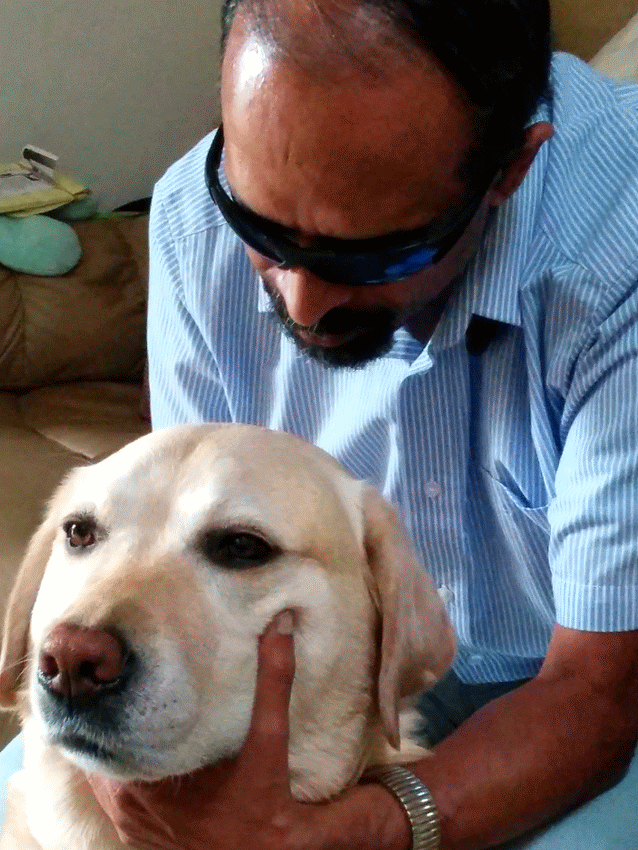

|  | |
| Resume (PDF) | Resume (HTML) |
Over time this site will host Emacspeak blog content, and other material relevant to my Open Source projects.
Audio System For Technical Readings (AsTeR) was implemented for my PhD at Cornell and awarded The ACM Doctoral Dissertation Award in 1994.